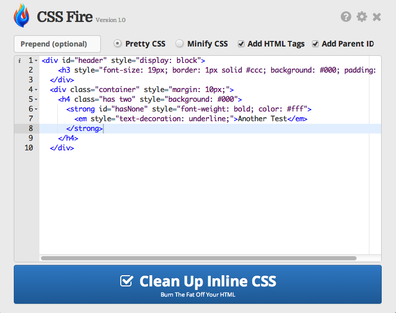
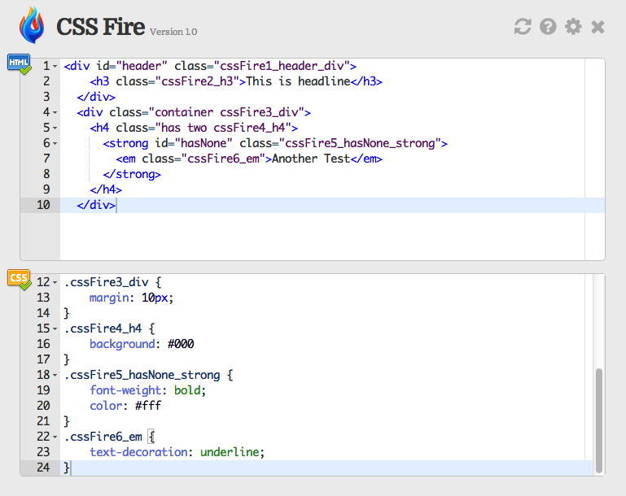
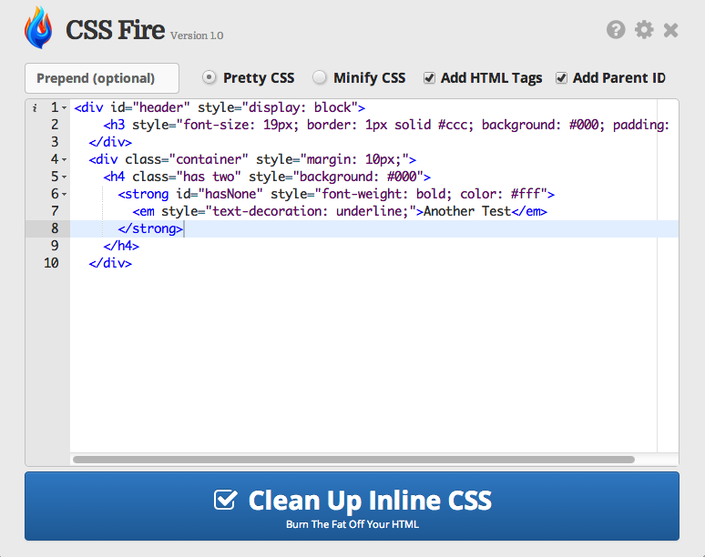
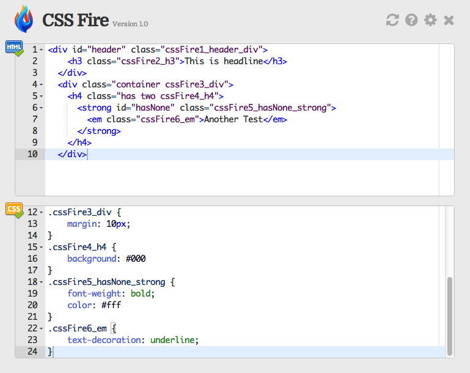

Need it for later? Download the app
 Mac OSX
Mac OSX
 Windows
Windows
Learn all about the goodness Watch Video Tutorial
Listen.. We Should Talk Provide Feedback
Benefits of CSS Fire


Learn all about the goodness Watch Video Tutorial
Listen.. We Should Talk Provide Feedback
Benefits of CSS Fire
Strip Inline CSS Styles
Minify CSS
Add HTML Tag to Classes
Add ID to Classes
Download Desktop App


About CSS Fire
-- Developed by Wynter Jones @ CodeCore to help clean up the inline CS styles in his own web projects.
Burn Away Inline CSS Styles
Write Inline CSS for Development and Cleanup for Production
It's time to make your HTML documents less ugly and bloated with all the CSS that should never appear in your beautiful HTML code.
CSS Fire is an online and desktop tool that will solve your habitual inline style problem. Don't worry this was built to solve my problem, too
How CSS Fire Works
Take your ugly HTML with inline CSS styles and remove them while creating a organized CSS stylesheet with classes added to your HTML. Follow the example below to see how it works:
Input: Your Ugly HTML
<div id="header" style="display: block">
<h3 style="font-size: 19px; border: 1px solid #ccc; background: #000; padding: 10px;display:block; letter-spacing: 1px">This is headline</h3>
</div>
<div class="container" style="margin: 10px;">
<h4 class="has two" style="background: #000">
<strong id="hasNone" style="font-weight: bold; color: #fff">
<em style="text-decoration: underline;">Another Test</em>
</strong>
</h4>
</div>
Output: Your Pretty HTML
<div id="header" class="cssFire1_header_div">
<h3 class="cssFire2_h3">This is headline</h3>
</div>
<div class="container cssFire3_div">
<h4 class="has two cssFire4_h4">
<strong id="hasNone" class="cssFire5_hasNone_strong">
<em class="cssFire6_em">Another Test</em>
</strong>
</h4>
</div>
Output: Your Pretty CSS
.cssFire1_header_div {
display: block
}
.cssFire2_h3 {
font-size: 19px;
border: 1px solid #ccc;
background: #000;
padding: 10px;
display:block;
letter-spacing: 1px
}
.cssFire3_div {
margin: 10px;
}
.cssFire4_h4 {
background: #000
}
.cssFire5_hasNone_strong {
font-weight: bold;
color: #fff
}
.cssFire6_em {
text-decoration: underline;
}